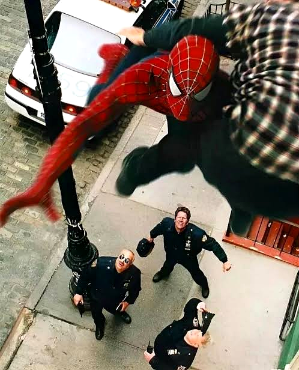
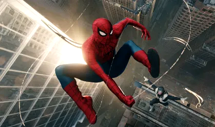

ENOUGH!
Citizens Call for Wall-Crawler's Arrest
Rising public alarm over masked vigilante actions sweeps through City Hall and Manhattan precincts as civic leaders demand immediate surrender.

The debate that has polarized New York City for weeks reached a fever pitch yesterday as civic groups, shopkeepers, and community leaders banded together outside One Police Plaza to demand decisive action against the masked figure known as Spider-Man.
What began as sporadic sightings of a bizarre acrobat swinging from Manhattan suspension bridges has metastasized into a full-scale vigilante crisis. Eyewitnesses across four boroughs recount unauthorized interventions, damaged masonry, and harrowing confrontations that leave citizens questioning whether they are witnessing a savior or a menace.
"He operates outside any constitutional oversight," declared City Council representative Arthur Vance during a fiery press briefing. "Who sanctioned this individual to enforce his own brand of street justice? How can our men and women in uniform maintain public safety when an anonymous acrobat drops from the clouds without accountability?"
Police Commissioner George Stacy confirmed that specialized task units have been mobilized to track the suspect's movements. Authorities urge citizens not to approach the costumed figure, warning that despite unconfirmed reports of thwarted muggings, the legal liability and public endangerment posed by unauthorized vigilantism cannot be tolerated.
Meanwhile, inside the buzzing newsroom of The Daily Bugle, calls continue to flood the editorial desk, with eyewitnesses reporting sightings from Hell's Kitchen to Queens Boulevard. As night falls, the question echoes louder than ever across the metropolis: Who will hold the Wall-Crawler to account?
POLICE BAFFLED: Suspect Strung Up on Lamp Post
Officers arrive at Fifth Ave to find armed car thief dangling twenty feet in mid-air in synthetic cocoon.

Patrolmen from the 18th Precinct were greeted by a surreal spectacle at 11:42 p.m. last evening. Responding to a silent alarm triggered during an attempted vehicle heist, officers arrived at 53rd Street only to find the armed suspect dangling upside down like a cocoon.
Witnesses reported that the suspect, identified as 34-year-old Dennis Carradine, was attempting to hotwire a luxury sedan when a red-and-blue figure dropped from the fire escape above. Within forty-five seconds, Carradine was bound in an unidentified white adhesive substance and hoisted toward the fixture.
"We pulled up with sirens blazing, and there he was," remarked Officer O'Hanlon. "The guy was hollering for us to cut him down, and right above on the lamppost, the masked freak was just perched there, staring at us with those blank white eyes."
Forensic experts from the NYPD Crime Lab are currently analyzing the bizarre adhesive webbing, which officers noted began dissolving into harmless dust approximately two hours after application.
HIGH-FLYING ACROBAT: Wall-Crawler Vaults Skyline

Commuters peering from the upper decks of the Staten Island Ferry and office workers in the Financial District were treated to a jaw-dropping aerial display yesterday afternoon when the city's self-appointed protector was seen traversing the skyline at dizzying speeds.
Federal Aviation Administration spokespersons voiced grave concern regarding the unregulated trajectory of the acrobat, who reportedly passed within fifty yards of a traffic-monitoring helicopter near the Brooklyn Bridge.
"The kinetic forces and spatial awareness exhibited surpass any Olympic-level gymnast by orders of magnitude," remarked Dr. Curt Connors of Empire State University.
PUBLIC MENACE NUMBER ONE
"What kind of man wears a mask? An honest doctor? A courageous firefighter? A sworn police officer? No! Criminals wear masks! Cowards who don't want anyone to see their guilty faces wear masks! The Daily Bugle will not rest until this freak faces justice!"
OSCORP ANNOUNCES NEW DEFENSE CONTRACT
Dr. Norman Osborn addresses board members at midtown headquarters, promising military trials for proprietary human-performance enhancers.